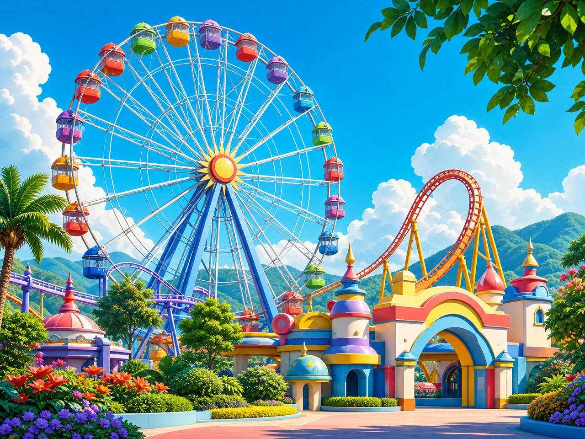
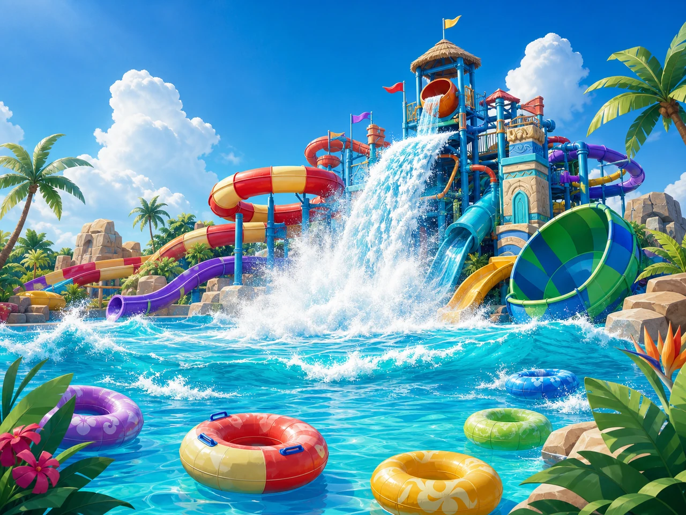
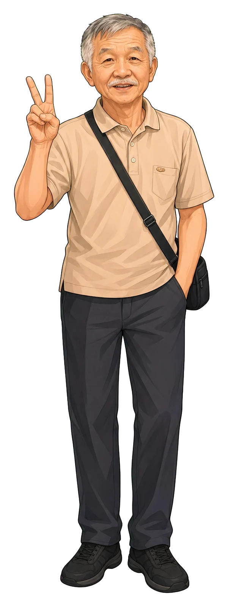
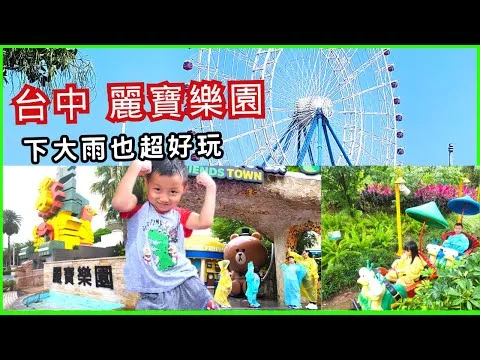
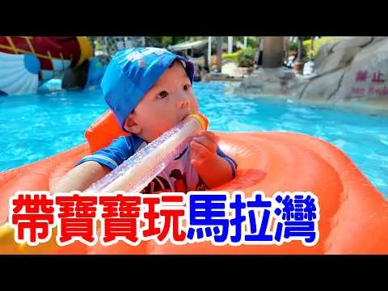

DAY 1 · 7/27(一)
陸地冒險
- 08:00
- 高雄出發
- 11:30
- 世界劇場
- 14:00
- 午休／刺激分流
- 16:15
- POPA 奇技秀
- 19:45
- 可愛奶奶 SPA



高雄出發 · 麗寶渡假區 · 三天兩夜
THE TRAVEL TEAM
OFFICIAL PARK MAPS
官方完整地圖用來找廁所、醫護站、置物櫃與設施位置；每日區塊另有我們家的簡化動線。
TRIP AT A GLANCE
其他設施都能依體力替換，這五個時間決定整趟旅行是否從容。
ROOM PLAN
可愛奶奶比較難睡，因此把打呼影響與孩子洗澡照顧分開處理。
帥信頭負責隔天時間與票券；可愛爺爺可以安心休息，不影響可愛奶奶睡眠。
妞胖姿協助孩子洗澡與整理；睡前提早降噪，準備耳塞或白噪音。
MONDAY · 7/27(一)
上午用室內劇場適應溫度與體力；13:00 六人一起玩休閒設施，14:00 起長輩午休、爸媽陪孩子挑戰刺激設施，再以 POPA 秀重新集合。

觀看實玩攻略抵達基準10:32，另留停車與預辦入住時間
全家同行11:30 劇場／13:00 休閒設施／16:15 奇技秀
午後分流14:00-16:00 長輩午休／爸媽陪孩子玩刺激設施
晚間分流可愛奶奶 SPA；其餘五人使用飯店設施
OUR FAMILY ROUTE
16:00 POPA 主題館是唯一硬集合，其餘依排隊與體力調整。
出發前全員先上洗手間。Google Maps 無壅塞約 2 小時 32 分，中途不預排休息。
預辦入住、寄放行李、確認票券、SPA 與第三天手作登記方式。
「糖果王的幸福之旅」作為第一個固定座位與降溫時段；表演名稱以當日公告為準。
不出園找餐廳。先選快速出餐、有座位、口味清楚的餐點。
六人一起選花園小舟、魔法風琴師、熊大的麗寶小鎮或短排隊設施；以可愛爺奶的體力與現場健康警語為準，玩 1-2 項就好。
預計 14:15 左右回房，安心睡到約 15:45；不用配合花車遊行提早回園區。
先處理 16:00 關閉的「搶救地心」，再依身高與排隊時間選火山冒險或叢林泛舟。築築未達限制時，爸媽輪流陪她玩附近較溫和的設施。
約 15:45 起床、整理後慢慢走回園區，目標 16:00 前抵達 POPA 主題館。
孩子想看就於 14:45 到路線旁找位置；若熱門設施排隊順暢，也可略過遊行繼續玩，不要求長輩回園區集合。
先上洗手間、喝水並入場找座位。可愛爺奶從飯店直接過來，親子冒險隊最晚 15:50 停止排隊。
室內坐著看表演，讓孩子降溫、長輩重新進入遊園節奏；若現場調整演出，以園區公告為準。
散場後一起補玩花園小舟、魔法風琴師、陽光探戈、熊大的麗寶小鎮或拍照點；不再分散追熱門設施，18:20 從容離園。
共享餐廳優先，來不及則用美食街。19:45 可愛奶奶到飯店 SPA，其餘五人 20:00 起玩泳池、遊戲室或 POPA 俱樂部。
游泳與三溫暖結束後才喝少量酒精飲品；孩子累了可先回 B 房睡覺。
進園先看當日 App／看板。重力設施與戶外表演可能因天候調整，先換設施，不在原地久等。
可愛爺奶 14:00 回飯店、約 15:45 起身離房，預留走回園區與入場時間；16:00 是唯一硬集合，不用為 15:00 遊行打斷午睡。
親子冒險隊最晚 15:50 停止加入新隊伍。若「搶救地心」排隊過長，就改火山冒險或叢林泛舟，不冒著錯過 POPA 秀的風險硬等。
TUESDAY · 7/28(二)
可愛爺爺水性好，可以陪玩第一段；看完 13:45 水遊行與 14:00 泡泡趴後，再和可愛奶奶一起回飯店休息。

觀看親子玩水入園09:30，先置物與確認集合點
全家活動13:45 水遊行／14:00 泡泡趴
親子收尾16:30 泡泡趴／17:30 終場秀
OUR FAMILY ROUTE
入園先記住置物櫃與集合點；14:15 後可愛爺奶不再折返水樂園。
不吃過飽。先穿泳裝、擦第一層防曬，再帶乾衣與防水袋出發。
置物櫃完成後，先玩最期待的家庭水域與熱門項目；每 45-60 分鐘確認長輩狀態。
避開尖峰，補水、重新防曬，下午保留體力看官方水遊行與泡泡趴。
可愛爺爺與可愛奶奶可站在較外圍陰影處觀看，不必進泡泡最密集區。
回房午休、走皇家花園或使用安靜設施，不再返回水樂園。
帥信頭與妞胖姿分工陪蔓頭人、築築玩滑道、漂漂河與造浪。
依精神選擇午睡、皇家花園散步或安靜設施，不必趕著回水樂園。
玩完後直接沖洗與換乾衣，17:30 到天晴廣場看終場秀。
整理好晚餐用品，約 18:00 與親子隊碰面後再一起出發。
看完離園，約 18:00 回飯店與可愛爺爺、可愛奶奶會合。
20:00 參加飯店氣球教學；之後依體力選 POPA 俱樂部或皇家花園。
WEDNESDAY · 7/29(三)
上午先用飯店設施，11:00 前退房；下午只保留三個短活動，16:10 再慢慢回高雄。
11:00-12:10
看水豚、羊駝、狐獴等動物並分批餵食。可愛爺奶有椅子就先坐，帥信頭與妞胖姿負責洗手、拍照。
13:30-14:35
6 歲以上、身高 120 公分以上、體重 100 公斤以下可駕駛，以現場量測為準。
15:30-16:00
週日至週四 15:30，限量 15 位。入住時先問登記方式，退房後仍回飯店參加。
HOTEL AS HOME BASE
第一晚玩設施、第二晚放鬆、第三天退房前再游一次。
週一至週三 12:00-13:00、16:00-17:00 消毒暫停。第一晚與第三天早上使用。
第一、二晚的安靜備案，孩子累了可以隨時回房。
成人自由使用，但不與照看孩子的分工衝突。
12:00-13:00 暫停；飲酒前後不使用。
桌球、撞球器材借用通常每次一小時，依現場規則。
晚餐後散步與聊天最合適；酒精飲品可使用區域入住時確認。
週二、週三公休且須預約，因此只安排第一晚給可愛奶奶。
10:50 完成最從容。可先詢問退房後寄放行李與參加手作方式。
RAIN PLAN
Day 1保留世界劇場、LINE FRIENDS TOWN、POPA 室內空間與 Outlet。
Day 2馬拉灣大幅停駛時改追風奇幻島；週二高空繩索與惡魔滑梯不開，但球池、迷宮、彈跳區仍可用。
Day 3農場與戶外賽車取消，10:30-13:00 改室內遊戲，15:30 手作照常保留。
48 HOURS BEFORE
勾選狀態會保存在這台裝置。
WATCH BEFORE THE TRIP